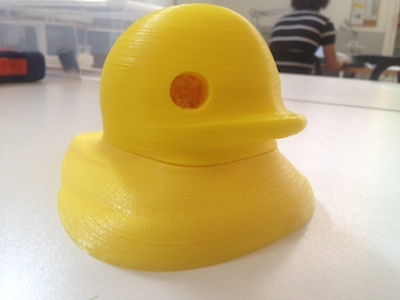

Final Project: Fabduck! A pool social robot.
Intro
The concept for the final projects stars from my interest about human- computer interaction and novel interaction paradigms. I think technology should make things easier, through automation and amplification of human capabilities. However the interaction with tools should be also fun and pleasurable. As human brain is used to consider “alive” everything that shows a “smart” behaviour (and digital tools usually pretend to be smart) I wanted to create an object that has personality and allows a different kind of human-computer interaction.
The Concept
The concept is to create a "social robot" that can create an “emotional” interaction with the user and that is able to move him/her to do something. I focused on a specific context of use: pool in a garden during summer. My social robot is a duck that is happy when people are in the pool having fun and that feels lonely when is left alone. So, communicating thorugh social networks, it is able to share its feelings.
Background
There are several projects aimed to control water quality in pools or aquariums. Almost all projects control temperature and pH/oxidation-reduction potential (ORP) as it’s very expensive (and difficult) to control other chemical parameters. However all projects are just measurement tools and the interaction it's just based on a functional goal: Ph-Probe, pHDuino, Pool monitor, OpenSPA Monitor, PoolDuino.
Regarding giving a personality to the objects my inspiration is the work of simone Rebaudengo with his "addicted products" project. Here there is the video of Brad "the toaster".
Addicted products: The story of Brad the Toaster from Simone Rebaudengo on Vimeo.
Brad shows a personality, it feels lonely when nobody uses it, require attention and so on. It communicates through tweets and movements.
Another example of social robot/digital companion is Jibo (watch the video below)
From a theoretical point of view my project took inspiration from Affective Computing (for a definition MIT Media Lab page, a good overview is given by the Interaction Design Foundation and, of course, there is the book of Don Norman Emotional Design) and from gmaification and the Fun Theory .
Scenario
It is a hot summer evening. The duck is in the pool, alone. Everybody is at work. The duck is feeling alone and starts sending pictures on Twitter/Facebook to invite people to come in. In the meantime the duck checks the temperature and the pH of the water, adding chlorine if needed, so the pool will be ready when people will arrive. Later Max comes back with some friends and they enter into the pool, the duck feels the presence of other people and is happy. It shares a status on Twitter/Facebook. Other ducks in the network read the status...
Main Functionalities
After the first concept I pointed out the main functionalities of the duck.
- Tweet some status according to some rules applied to the parameters monitored showing a personality: require attention when nobody is in the pool for a long time, be happy when there are people around, be happy when the water is at a good temperature to swim;
- Send an help request if someone tries to sink it.
The duck should have this capabilities:
- Check the temperature of the water and share it
- Know if is day, night, sunny or cloudy (time + Yahoo Weather API)
- Detect waves as sign of human activity (people in the pool with accelerometer)
- Detect if someone tries to sink it
- Connect to the Internet to access information and share data
And should have these basic electronic components:
- Temperature sensors
- Accelerometer (to feel the waves)
- RGB led for a feedback
- Wireless connection to the Internet
- Electronics to make everything work!
Challenges
I think that the main challenges to develop the project will be:
- Water and electronics! : choose the right materials to make the structure and protect the electronics from the water and corrosion.
- Power consumption: it should optimize the use of power and recharge with solar panels
Project Development
In this section I will update the current progress of the project development according to the activities reported in the applications and implications assignment. In that page you can find also the BOM of all the project.
Design an make the case (the duck)
I'm building first the electronic part to correctly size the duck to host it. In the meantime I'm studiyng about buoyancy (interesting book here) tho be sure that the duck can float over the water. A first version of the model could be seen here.
However I wanted to try also other software and, following this tutorial I drawn another duck using Rhino. With Rhino I feel more in control of shapes than whith sculpting even if, for organic shapes, could be better. I took inspiration from the The giant rubber duck is in Hong Kong's Victoria Harbor made by Dutch artist Florentijn Hofman. I started taking two images (front and right) to model it. I aligned and scaled the two images and then I draw the outline with the control curve command and then I use the cross-section profiles command to draw a curve touching the profiles created. Then with the command surface from curves network I created a surface connecting the curves representing the profiles of the duck.
One of the hardest part is find a way to let me open and close the duck to put electronics inside keeping the water out! To do this I made the duck cave and I made a screwable head. In this way I can open the duck when I want (i.e. to recharge the battery) and I can keep the water out adding some insulating material. However modelling a screw is not so easy and I adapted a Grasshopper definition made made by Aldo Sollazzo. I left much space between the outer and the inner shell. This is made to better protect the electronics from the water (there is more distance) and to make the duck more resistant.

You can find th 3dm and stl file in my Github repo.
While designing I figured out where to put the electronics as in the schema below (look at the assemblation paragraph for more detailed information).
The printing part was not so easy. The duck is very big and required many hours of printing. I splitted the body of the duck in two so I could use two printers to do the job and it is less expensive to make tests.
To reduce the time I used Cura to change some setting. I'm printing in PLA with an Ultimaker 2 with a 0.4 mm extruder. Mainly I augmented a little bith the layer height and the shell thickness. The first parameter make thr print less precise but faster, the second make the shell more robust even if is more time demanding. After a several attempts (you can see pictures of different attempts) I found the correct balance in 0.14 mm layer height and 1.2 mm shell thickness. I didn't fill up the bottom as the two pieces will join together. This reduced the printing time of 20% and the quality was acceptable. The print quality, however,should ensure that the water doesn't penetrate in the inner shell.
In the following image there is a trial with a lyer height of 0.17. It left big holes in between the traces.
The printing times were long: head 9 hours 80 grams of PLA, upper part of the body 12 hours 100 grams of PLA, lower part 21 hours 221 grams of PLA.
This is the top part of the body:
The head in a shakespearean monologue:
Then screwing the head on the top pf the body:

Waiting for the last piece to be baked...
Done!
The quality was not good as expected despite the 20 hours of job however the outer shell is fine. I hope the duck will not sink!
Testing the case
Before putting the electronics inside I made a test in the water. At first with the lower part of the duck and then with the body assembled (just with some tape inside). For the test I used an inflatable pool (diameter 70 cm water height 30 cm).
It is a little bit overweight in the front however the things I'll punt inside will balance it. Or I can add a keel as used in some boats. I noticed that there is a little bit of water entering inside. It is because of the quality of the printing. However as printing the hull with a 100% fill and a lower layer height will be expensive and time consuming I decided to use epoxy resin (I used this one). I used 50 grams of the A component and 30 of B as suggested.
Then I have to wait for 10 hours to see the result. Ant it was good! The picture below it is not very clear however you can see water drops on the resin, sign of the impermeability of the hull.
However I'm still not satisfied so I'll work more in the future on the prototype to make it more resistant and waterproof. Maybe I'll make it in a composite material.
Make the electronics
As I analyzed in is in the applications and implications page I need the board to communicate over Wi-Fi and send/receive data, sense water temperature, sense the waves (sign of presence of people) give feedback with two RGB LEDs and of course power up with a rechargeable battery. Below the boards I used. Two of them were self produced
As the ESP8266 and the acceleromenter work at 3.3v and the ESP8266 needs to communicate over serial and the Fabkit works at 5v I designed a board to host the voltage regulator, the logic level shifter for the ESP8266 Wi-Fi board and connections for sensor and actuators. For the logic level shifter I adapted an open source project shared by sparkfun. It is 4 channel but I reduced it at two. You can see the details of my board and download the files in my GIThub repo. It is important to regulate the voltage and also the logic levels of the communication otherwise you will burn the ESP board! You can use also a voltage divider but it will not work for shifting up the level when the ESP is transmitting to the Fabkit.
I designed the board using Eagle, you can see below the file with the tracesready for the milling machine. I used the fabmodules to prepare the G-CODE. To make the traces I used the 1/64" tool and I saw that I got better result changing the number of offsets to 5. It helps to have cleaner traces. To mill the circuit I used a Roland SRM-20
At the beginning, for the main cointrol board, I wanted to make a Satshakit however I had problems receiving some components ordered from Digikey and I decided to use the Fabkit modifying if with a 16MHz resonator (to maximize compatibility with the temperature sensor library I'm using). For the power supply I used a 5v 2400 mah rechargeable battery. It has a usb female plug so I soldered two wires on a usb male plug and powered the Fabkit board.
To use the ESP8266 I connected the VCC to the low voltage output of my board (LV). I connected also the RST and the CH_PD to the LV. The board resets when RST goes to ground.Here you can find a good tutorial for connecting the ESP8266. I used the logic level converter to connect the RX pin of the board to the TX pin of the Fabkit and TX to the RX(I used software-serial library with RX 10 and TX 11). To debug I used a USB-TTL cable connected to tha RX/TX pin of the Fabkit (0 and 1).
To sense the water temperature I used a waterproof Dallas sensor DS18B20. It's a digital temperature sensor and it's very accurate. It uses the "One wire" protocol. This particular protocol allow to connect the sensor with 3 (GND, VCC and digital signal) or with 2 (GND and VCC + signal) wires. I used the 3 wire configuration. I made a specific connector on my board.
I made a specific connector for the accelerometer on my board to give the 3.3V and the GND. The accelerometer is analog and has a pin for each axe. So I connected the three pins to three analog pins on the Fabkit (ADC).
I used two common anode led I already had. I connected them in parallel.
Making the code
To develop the code I starded from the behaviours I wanted to implement.Some of the behaviors I want to implement:
- if the duck doesn't feel presence in the water for a couple of hours and is daytime (some NTP) post on Twitter some random sentence to say it feels lonely. If the weather is good (Yahoo Weather API) and the water is warm invites people to bath.
- If someone try to sink it, sends an help request on Twitter
- If it feels the presence of people(accelerometers) sends happy statuses on Twitter. If not send bored statuses.
- If it is bad weather (Yahoo Weather API) it is sad and sends sad statuses on Twitter and says when the weather will be fine.
- Sometimes sends random statuses, for fun :)
I decided to make a distributed architecture and don't leave all the computational effort to the Fabkit. I developed a php page that acts likea proxy, accesses Yahoo Weather API (example request) and prints a series of useful values about time and weather of Rome (the city I live in) : current temperature, current condition code (a number representing the weather condition eg. 32=sunny), max and min temperature expected, current time (Rome time) and current weekday. I made this kind of proxy to simplify the access to the web API of Yahoo Weather. Indeed Yahoo replies with a long xml and I was afraid of filling up the memory of the ATMega. In this way I receive only the data I need. Morever I always writte "/123" at the beginning and I separate the values with "/". You can test here .So it's easier to parse the string and find the correct values. Moreover I use another service of ThingSpeack to share the water temperature values on this channel (watch it in real time).
Yo can see and download the code in my Github repo or below:
However I encountered a problem with the HTTP request made by the Fabkit to the page (you can see the code below) and I wasn't able to reach my website while the same script worked with others. I tried to add headers as a normal browser (i.e. adding the browser agent) request but probably some security settings is pushing me out. So I used ThingHTTP, a service of Thingspeak, that acts like a proxy. So the system is a bit strange. I call ThingHTTP that call my website that parses the Yahoo APIs.
As posting status on Twitter it is a little bit tricky due to openAuth process I used Temboo, an online service that acts like a bridge towards many APIs simplifying many operations. To reduce the code on the board I made a php page that receives a message and sends it to Twitter using Temboo API. In such a way the microcontroller just have to send an HTTP GET. You can see the code in my Github repo or below (for obvious security reasons I changed my data with xxxxx). For the same reason I explained above I used the ThingHTTP proxy.
And here you can see the message updated (in real time):
Tweet di @MaxandtheDuck
The code for the Fabkit was made using the Arduino IDE. I made the ESP8266 workig using athe AT commands over serial. I found very useful documentation here and here (pdf). The AT commands are easy to use and to understand but it was a little bit tricky because of the asincronous communication between the Fabkit and the board. Indeed when sending a command I have to wait that the ESP8266 answers and then take further actions.For doing this I made a function that waits for the reply of the ESP8266 and parses it. If it replies OK means that the command was correctly received. A > means that I connected to a webserver and I'm ready to send the GET request (see here for references about HTTP requests). If I receive a "/123" I know that is the answer from my proxy and I parse the message. The data are separated by "/" so I used the strtok command to split the message. Moreover, as the ESP uses the serial communication I had to use also the softwareserial library to create another communication port for debugging. The debug was useful as I find out a bug with my website. Even if formatting a right HTTP request it answers with an error. So, as descrived above, I use a proxy (ThingHTTP), that seems to accept my requests without problems. However the important thing in the communication is the sequence to make the request:
AT+CIPSTART="TCP","api.thingspeak.com",80 - open the communication with the webserver and get an OK reply
AT+CIPSEND=70 - the lenght (bytes) of the message to be sent
GET /apps/thinghttp/send_request?api_key=2M3F9GBGFLGHTI0D HTTP/1.0\r\n\r\n - the request to obtain a page. Don't forget the \r\n at the end! They make the server understand that the message is terminated
then an AT+CIPCLOSE is useful to close the communication and to be ready to made another request
To sense the water temperature I used a waterproof Dallas sensor DS18B20. It's a digital temperature sensor and it's very accurate. It uses the "One wire" protocol. This particular protocol allow to connect the sensor with 3 (GND, VCC and digital signal) or with 2 (GND and VCC + signal) wires. I used the 3 wire configuration. I needed a library to make it work. As the temperature doesn't change very quickly I check it every 60 seconds.
I decide to use the waves as a sign of human presence. To do this I used a 3 axis accelerometer ADXL377. It gives the acceleration as a voltage variation. As it works at 3,3V and the reference of the Fabkit's ADCis 5v it means that the maximum value is 675. As the sensor can read from -3 to +3 g it means that 0g is at 337,5. At the beginning I used the map funcion to remap the value red from the ADC in g. Then I use the formula sqrt(x^2+y^2+z^2) to obtain the total movement (plus g). However all this math was too much for the SRAM of the microcontroller (I'm using it a lot for the communication with the ESP8266) so I had to simplify the code. I used only the z axis that is perpendicular to the ground. I setted two thresholds: one for a normal wave (presence of people), one for a big wave (maybe a dive). Then I implemented the "bored" function that measures the time since the last movement and after a certain interval of inactivity set the "bored"status on.
I made the core "character" function that generates sentences that will be posted on Twitter according to some variables. Below you can see some sentences. There is a function that sends a random phrase every interval of time (to be set). One of the problem with the Twitter API is that you cannot send the same sentence twice in a short time or it will not post the message. However the random function returns a pseudo random number so, even if I gave as a seed a disconnected analog pin, so sometimes Twitter doesn't accept some sentence. However as with future developments the number of sentences will increase the problem will be reduced. Moreover some sentences are event driven by the accelerometers (e.g. a big wave, maybe a dive, make the duck says "Nice cannonball! But I can do it better!"). Moreover the high presence of Strings gave me some problems with low SRAM so I followed this suggestions to optimize it and use the Flash memory to store some strings. It is also useful to check the free SRAM. I doubled the SRAM available just pushing the string in the Flash memory.
Some examples of the sentences choosen according to the external variables:
Moreover, as a physical feedback, I have 2 RGB leds representing the eyes of the duck. Using colors to communicate something is not always easy because you are not sure that your user will understand or like them. Moreover using too many colours or blinking means creating a complex dictionary that would be hard to learn in the absence of other feedback. So I designed a simple behaviour. The eyes indicates if the temperature of the water is good to swim (how many time you are afraid about the temperature of the water?) .
Green = the temperature is above 24 (many forums about pools say that is the ideal temperature)
Blue = it's cold (below 24)
Then if the accelerometer detects a big wave they become red for a second.
When the duck is exchanging data with the web the eyes are white. I tought at the withe as a sign of absence. Indeed the microcontroller can do only one thing at once so during the procedure of getting and posting data the duck doesn't react to the waves.
A test of the eyes (could it be IronDuck?)
All the code is available on my GitHub repo.
Put the parts together
At firstt I made a simple test to see if the electronics fits in the body as expected. I placed the sensor the Fabkit and the board for voltage regulation, logic converting and sensor attachment.
I placed the accelerometer in a position that lets the Z axis be perpendicular to gravity.

I placed the battery in a longitudinal position for stability and to let me access the connector to recharge it from the hole of the body. I left outside the ESP8266 and the leds because they will go into the head.
The leds will be the eyes. I placed the ESP8266 in the head as radio waves doesn't like very much the water., high frequencies are absorbed by the water. As the head till turn to screw into the body I left some extra cable.
I made a hole in the lower part of the duck with the hot point of the solder to let the water temperature sensor pass. I sealed it with silicone rubber .
And now everything is inside and connected!
As the duck, even after placing resin on the hull, is not wareproof I placed the electronics into a plastic bag and I closed the two part of the body with a waterproof tape to make some fast test in the water.
The duck doesn't sink, feels the temperature (the sensor is working), send tweets (means that the wifi is working near the water) and reacts to the waves (even if I have to make a fine calibration).
So the test was ok for the electronics and also for the case, even if in future I'll work on the waterproof issue before leaving it alone in the water.
License and plan for distribution
The license and plan for distribution is explained in the project development page.
Future developments
This was the first prototype and was very useful to test my initial idea and refine it. Moreover I learn a lot of things while making the prototype. The most important one was the problem with the water. Even with a good print I didn't had a waterproof case. I used epoxy resin but it partially solved the problem. So one of the future developments will be to find another way to make the case waterproof.
WHile designing the system I followed the KISS rule (keep it simple and stupid) but there are a couple of things that I want to develop in the future:
- improve the interaction with the user adding more physical feedbacks
- make a distributed architecture that allows to expand the system adding sensors and actuators (maybe wireless connected)
- add a ph sensor
- add a chlorine dispenser
- add a solar panel for battery recharge
 Attribution, non-commercial, share alike.
Attribution, non-commercial, share alike.